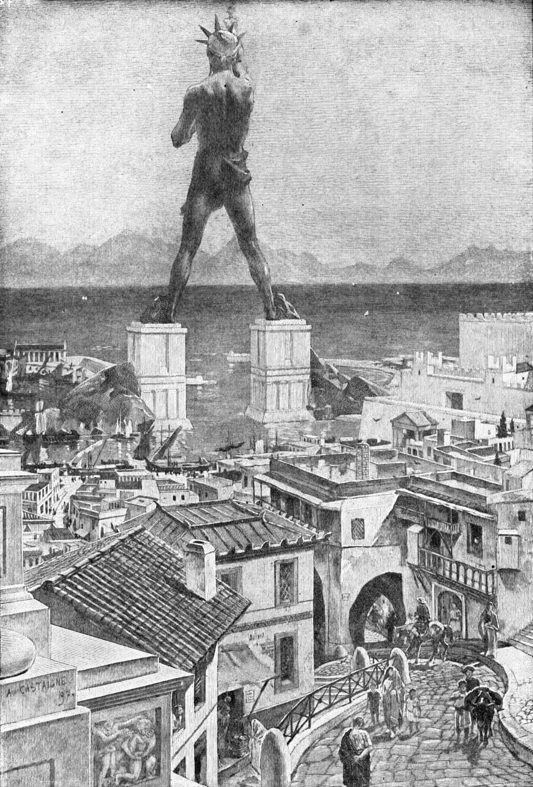

Rodoški kolos je bil kip grškega boga sonca Helija, postavljenega v mestu Rodos, na istoimenskem grškem otoku, kiparja Haresa iz Lindosa, leta 280. pr. n. št.. Eden od sedmih čudes antičnega sveta je bil zgrajen v čast zmage Rodosa nad ciprskim vladarjem Antigonom I. Monofthalmom, katerega sin je neuspešno oblegal Rodos leta 305 pr. n. št.. Po večini sodobnih opisov je bil kolos približno 70 laktov ali 33 metrov visok (približna višina Kipa svobode) od stopal do krone, zato je bil najvišji kip starega sveta. Uničen je bil med potresom leta 226 pr. n. št. in ni bil nikoli obnovljen.

Gradnja se je začela leta 292 pr. n. št. Antični opisi, ki se v določeni meri razlikujejo, opisujejo strukturo, ki je bila zgrajena iz železnih palic, na katere so bile pritrjene medeninaste plošče, ki so tvorile kožo. Notranjost zgradbe, ki je stala na 15 m visokem belem marmornem podstavku, blizu pristanišča Mandraki, je bila potem, ko je gradnja napredovala, napolnjena s kamnitimi bloki . Drugi viri postavljajo kolos na valobran v pristanišču. Po večini sodobnih opisov je bil sam kip približno 70 lakta ali 33 metrov visok. Veliko železa in brona je bilo pretopljeno iz raznega orožja, ki ga je pustila Demetrieva vojska, zapuščen oblegovalni stolp pa se je med gradnjo uporabil za odre. Zgornji deli so bili zgrajeni s pomočjo velike zemeljske klančine. Med gradnjo so delavci ob straneh kolosa nabirali zemlja. Po zaključku je bila vsa zemlja odstranjena in kolos je ostal samostojen. Po dvanajstih letih, leta 280 pr. n. št., je bil kip dokončan. Ohranjeno v grških antologijah poezije je tisto, za kar se domneva, da je resnično pristno besedilo za Kolos.
Sodobni inženirji so podali verodostojno hipotezo o konstrukciji kipa, ki temelji na tehnologiji tistega časa in na opisih Fila in Plinija, ki sta videla in opisala ruševine.
Kip je stal 54 let, dokler ni Rodosa prizadel potres v letu 226. pred našim štetjem, ko so bili znatno poškodovani tudi veliki deli mesta, vključno s pristaniščem in komercialnimi stavbami, ki so bile uničene. Kip se je prelomil pri kolenih in padel na zemljo. Ptolemej III. je ponudil plačilo za rekonstrukcijo kipa, vendar pa je preročišče Delfi prestrašilo Rodošane, ki so se bali, da so užalili Helija in so zavrnili obnovo.
Decembra 2015 je skupina evropskih arhitektov napovedala načrte za izgradnjo sodobnega Kolosa, ki bi povezal dva pomola pristaniškega vhoda, kljub prevladi dokazov in mnenju znanstvenikov, da prvotni spomenik ni mogel stati tam. Novi kip, visok 150 metrov (petkratna višina izvirnika), bi stal približno 283 milijonov dolarjev, ki bi se financiral iz zasebnih donacij in množičnih virov. Kip bi vključeval kulturni center, knjižnico, razstavno dvorano in svetilnik, ves oblečen v solarne plošče.